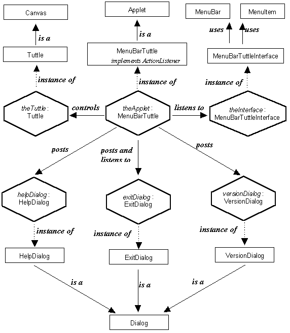

The instance diagram for the MenuBarTuttle applet is presented in Figure 6.4. The upper part of this diagram is comparable with the instance diagram of the SemiDirectTuttle applet in Figure 5.5. It shows that theApplet is an instance of the MenuBarTuttle class which extends the Applet class and implements the ActionListener interface. It listens to theInterface, which is an instance of the MenuBarTuttleInterface class and controls theTuttle which in an instance of the Tuttle class.

Figure 6.4 MenuBarTuttle instance diagram.
The lower part of the diagram shows the three dialogs: helpDialog, exitDialog and versionDialog, all of which are instances of the appropriate class extended from the AWT Dialog class. The theApplet instance needs only to listen to the exitDialog as, as will be explained below, it is the only dialog which will have any effect upon the behavior of the application. The classes making up this application will be implemented within a package called MenuBarTuttle.